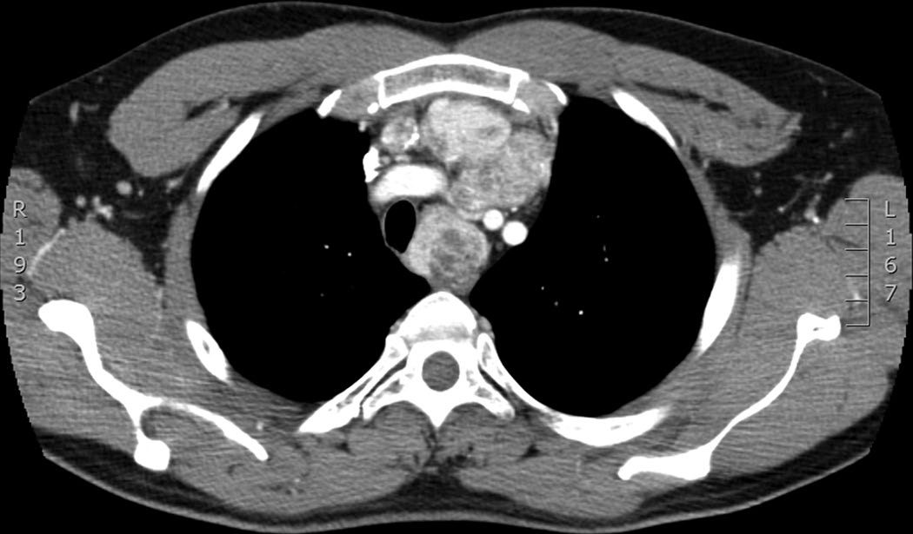
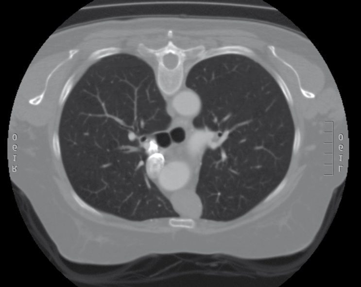

Mediastinum and Trachea
Summary
- Mediastinal masses are sorted first by compartment, because location predicts histology. The anterior mediastinum is the commonest site, and its differential is the four Ts, thymoma, thyroid, T-cell lymphoma and teratoma [1].
- Two figures set the index of suspicion: 50% of symptomatic mediastinal masses are malignant, and 90% of asymptomatic ones are benign [1].
- This page also covers tracheal tumours and stenosis, and the two fistulae that complicate a tracheostomy, including tracheo-innominate artery fistula, which can exsanguinate a patient in minutes
Definition
Neurogenic tumours are the most common mediastinal tumour in both adults and children, and usually sit in the posterior mediastinum [1].
The anterior mediastinum contains the thymus; the middle contains heart, trachea and ascending aorta; the posterior contains oesophagus and descending aorta [1].
Pathophysiology
The thoracic anatomy that matters at mediastinoscopy is what lies on each side of the scope [1]. Looking into the middle mediastinum, the left-sided structures are the recurrent laryngeal nerve, oesophagus, aorta and main pulmonary artery; the right-sided structures are the azygos vein and superior vena cava; and anteriorly lie the innominate vein, innominate artery and right pulmonary artery.
Two nerves relate to the hilum in opposite ways: the phrenic nerve runs anterior to it, the vagus posterior [1].
Tracheo-innominate fistula is a positional complication. It occurs after tracheostomy and is avoided by keeping the tracheostomy between the second and third tracheal rings [1].
Post-intubation stenosis occurs at different sites depending on the tube: at the stoma site with a tracheostomy, and at the cuff site with an endotracheal tube [1].
Clinical features
Most mediastinal tumours are asymptomatic, and may present with chest pain, cough or dyspnoea [1].
Myasthenia gravis presents with fatigue, weakness, diplopia and ptosis, the ocular symptoms being commonest, and is caused by antibodies to acetylcholine receptors [1].
Neurogenic tumours present with pain and neurological deficit [1].
A tracheo-innominate fistula may announce itself with a sentinel bleed (a small amount of bleeding) before catastrophic haemorrhage [1].
Etiology
By compartment
| Compartment | Contents and masses |
|---|---|
| Anterior | Thymoma (commonest anterior mass in adults); thyroid cancer and goitres; T-cell lymphoma; teratoma and other germ cell tumours; parathyroid adenomas |
| Middle | Bronchogenic cysts; pericardial cysts; enteric cysts; lymphoma |
| Posterior | Enteric cysts; neurogenic tumours; lymphoma |
Lymphoma is the commonest cause of mediastinal adenopathy [1].

Thymoma and myasthenia
Thymoma runs on a series of 50s: 50% of thymomas are malignant, 50% of patients with thymoma have symptoms, and 50% of patients with thymoma have myasthenia gravis, but only 10% of patients with myasthenia gravis have a thymoma [1]. Thymomas are rare in children [1].

Germ cell tumours
Teratoma is the commonest germ cell tumour in the mediastinum and may be benign or malignant [1]. Seminoma is the commonest malignant germ cell tumour: 10% are beta-HCG positive and it should not produce AFP [1]. Non-seminoma has elevated beta-HCG and AFP in 90% [1].
Tracheal tumours
The commonest benign tracheal tumour is papilloma in adults and haemangioma in children; the commonest malignant tumour is squamous cell carcinoma in adults and carcinoid in children [1].
Diagnosis
Mediastinoscopy will not reach an anterior or posterior mediastinal lesion [1]. Where open biopsy of a germ cell tumour is required, an anterior thoracotomy (parasternal mediastinotomy, the Chamberlain procedure) is used instead [1].
In a suspected mediastinal germ cell tumour, look for the primary elsewhere: check the testicles in men and perform pelvic ultrasound in women [1].
For a tracheo-innominate fistula with a small sentinel bleed, bronchoscopy is used to look for the fistula [1].
Thresholds and severity
Fifty per cent of symptomatic mediastinal masses are malignant; 90% of asymptomatic masses are benign [1].
All thymomas require resection [1]. Resection is also indicated where the thymus is too big or is associated with refractory myasthenia gravis [1].
Ten per cent of neurogenic tumours have intraspinal involvement requiring simultaneous spinal surgery [1].
Treatment and Management
Myasthenia gravis is treated with anticholinesterase inhibitors such as neostigmine, steroids and plasmapheresis, and 80% improve with thymectomy, including patients who do not have a thymoma [1].
- Germ cell tumours are treated by histology.
- Teratoma is resected, with possible chemotherapy. Seminoma is extremely radiosensitive and is treated with radiotherapy, chemotherapy being reserved for metastases or bulky nodal disease and surgery for residual disease thereafter.
- Non-seminoma is treated with chemotherapy (cisplatin, bleomycin and etoposide) with surgery for residual disease [1].
Cysts are treated differently by type: bronchogenic cysts, usually posterior to the carina, are resected; pericardial cysts, usually at the right costophrenic angle, can be left alone, being benign [1].
Neurogenic tumours are resected [1]. The commonest is neurolemmoma (schwannoma); paraganglioma can produce catecholamines and is associated with von Recklinghausen's disease; neuroblastomas and neurofibromas also occur [1].
Post-intubation tracheal stenosis is managed by serial dilatation, bronchoscopic resection or laser ablation if minor, and by tracheal resection with end-to-end anastomosis if severe or recurrent [1].
Procedural interventions
Massive bleeding from a tracheo-innominate fistula has an immediate manoeuvre: place a finger in the tracheostomy hole and hold pressure against the back of the sternum, then proceed to median sternotomy with ligation and resection of the innominate artery (ligation only, no graft) closing the tracheal hole primarily and interposing strap muscle between the ligated artery and the trachea [1].
Tracheo-oesophageal fistula from prolonged intubation is managed by placing a large-volume cuff endotracheal tube below the fistula, with a decompressing gastrostomy if needed, and attempting repair only after the patient is weaned from the ventilator; repair is tracheal resection and reanastomosis, closure of the oesophageal hole, and a sternohyoid flap between oesophagus and trachea [1].
Complications
The commonest early complication after tracheal surgery is laryngeal oedema, treated with reintubation, nebulised adrenaline and steroids; the commonest late complication is granulation tissue formation [1].
Tracheo-innominate artery fistula is the complication that can cause rapid exsanguination, and is prevented by tracheostomy placement between the second and third rings [1].
Outcomes
The prognostic split in mediastinal disease is captured by the two percentages at the top of this page: symptoms make malignancy roughly even odds, while their absence makes benign disease overwhelmingly likely [1].
For myasthenia gravis, thymectomy improves 80% of patients whether or not a thymoma is present [1], which is why the operation is offered for the disease and not only for the tumour.
References
- The ABSITE Review, 2022, Ch. 25 Thoracic
- Sabiston Textbook of Surgery, 22nd ed., Ch. 110 Lung, Chest Wall, Pleura, and Mediastinum